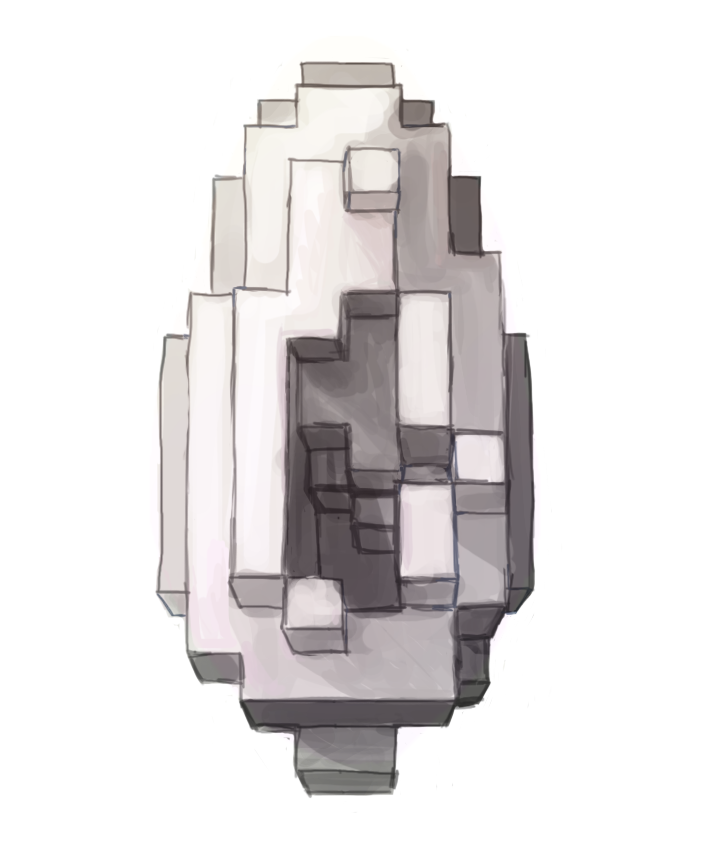

art + illustration
2D things - 2012 to present
I'm interested in creating art that explores delicate spaces of intimacy within the self, intimacy between humans, and intimacy between humans and technology.
paintings
(IN PROGRESS) paintings of selfies that i have taken

"i embarrass myself" (2016)
oil on canvas board
return gaze;
An interactive, motion-sensitive Flash painting for my MAS.110 Fundamentals of Computational Media Design final project (December 2014).
Engaging with the concept of "male gaze", which influences the objectification of women in both fine arts and pop culture imagery, I created an interactive painting in attempt to play with this idea subversively by programming the eyes to follow your movement using a webcam motion-tracking plugin.

go to interactive version
illustrations
IB Art Portfolio
During my junior + senior year of high school I participated in the IB (International Baccalaureate) Visual Arts program and created a series of portfolio pieces investigating the theme "Order and Chaos". Within this theme I broadly tried to explore the mathematical, technological, personal, and emotional tensions of how we structure our experiences in space and time.
distribution (2013)
oil on canvas
16" x 20"
lucid dreaming (2013)
acrylic on canvas
16" x 20"
data corruption (2013)
acrylic on canvas
16" x 20"
too many eyes (2014)
acrylic + gouache on poster
11" diameter
silver river (2014)
animated gif
impressions of water lilies (2013)
acrylic on canvas
whatever
disselve (2012)
acrylic on canvas
16" x 20"
jewel at the heart (2014)
acrylic + LEDs on plexiglass
whatever
made with  by jackie liu
by jackie liu